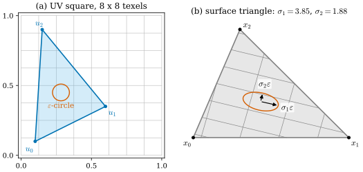
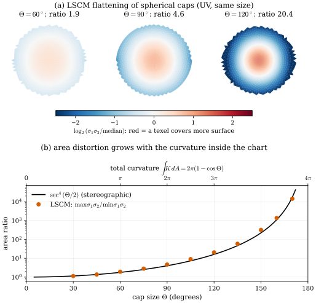
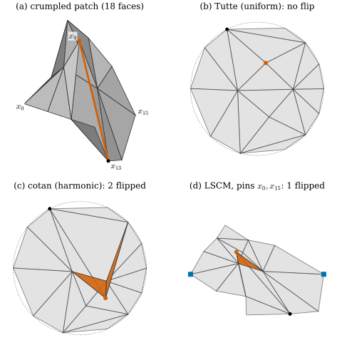
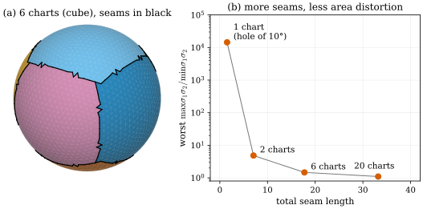

31.6 Parametrization and Texture Mapping
Goals
- piecewise-linear UV map의 triangle마다 Jacobian과 singular value를 계산하고, 그것으로 각·넓이·texel density의 왜곡을 읽을 수 있다.
- LSCM의 conformal energy를 singular value로 쓰고, vertex 두 개를 고정해야 하는 이유를 설명할 수 있다.
- angle defect와 Gauss–Bonnet으로 휜 surface를 왜곡 없이 펼 수 없는 이유와, 그 대가가 chart의 크기와 함께 어떻게 커지는지 말할 수 있다.
- Tutte embedding이 뒤집힌 triangle을 만들지 않는 이유와, cotan 가중치나 LSCM에서는 그 보장이 없다는 것을 예로 보일 수 있다.
- seam과 chart의 수를 늘리면 왜곡이 줄어드는 trade-off를 수치로 설명할 수 있다.
Prerequisites
- Section 0.3: first fundamental form, UV unwrapping과 texture distortion(In computer vision 상자)
- Section 0.5: Theorema Egregium과 sphere의 왜곡 없는 지도가 없다는 것(Corollary 0.5.3), Gauss–Bonnet
- Section 31.2: angle defect \(\delta_i\)와 discrete Gauss–Bonnet(Theorem 31.2.4)
- Section 31.3: cotan 가중치, 음수 가중치와 maximum principle(non-Delaunay edge)
- Section 31.5: face의 affine map과 similarity
Motivation
복원한 mesh에 색을 입히는 가장 흔한 방법은 texture image다. vertex마다 image 안의 좌표 \((u, v)\)를 붙이고, triangle 안은 linear하게 보간한다. 그러면 image의 한 pixel(texel)이 surface의 어느 조각을 덮는지가 정해진다. Section 0.3의 In computer vision 상자는 이 map의 왜곡을 first fundamental form의 singular value로 읽는 법과 LSCM의 생각을 소개했다. Section 31.5에서는 face의 affine map이 similarity에서 얼마나 벗어나는지가 Gaussian binding의 차이를 정했다. 같은 양이 UV map의 품질을 정한다.
이 절은 mesh 위에서 그 생각을 끝까지 따라간다. triangle 하나의 왜곡을 어떻게 계산하는가, 왜 휜 surface는 잘라야 펼 수 있는가, 어떤 방법이 뒤집힌 triangle 없는 UV map을 보장하는가, 그리고 seam을 얼마나 두어야 하는가.
The Distortion of a Piecewise-Linear UV Map
Definition 31.6.1 (UV map of a mesh and its Jacobian). disk와 같은 topology를 가진 mesh(연결된 orientable manifold mesh로 \(\chi = 1\), boundary loop 하나)의 vertex마다 \(u_i \in \R^2\)를 정한 것을 UV map(또는 parametrization)이라 한다. face \(f = (i, j, k)\)에서 UV triangle을 surface triangle로 보내는 affine map의 Jacobian은
인 \(3 \times 2\) 행렬이다. \(J_f^{\mathsf T}J_f\)가 face 위의 first fundamental form이고, \(J_f\)의 singular value \(\sigma_1 \ge \sigma_2 \gt 0\)를 face의 왜곡이라 한다. \(\det\big[\,u_j - u_i \ \ u_k - u_i\,\big] \lt 0\)이면, 곧 UV triangle의 방향이 face의 orientation과 반대이면 그 face를 flipped face(뒤집힌 face)라 한다.
\(J_f\)는 UV에서 surface로 가는 방향이고 Section 0.3의 \(J\)와 같다. UV의 반지름 \(\varepsilon\)인 원은 surface에서 반축이 \(\sigma_1\varepsilon, \sigma_2\varepsilon\)인 ellipse가 된다. 다음 판정은 Tour와 Floater–Hormann의 survey [Floater05]에 있는 것을 face마다 쓴 것이다.
Proposition 31.6.2 (reading the distortion). face \(f\)에서
- (a) isometric(길이를 보존) \(\iff \sigma_1 = \sigma_2 = 1\), conformal(각을 보존) \(\iff \sigma_1 = \sigma_2\), equiareal(넓이를 보존) \(\iff \sigma_1\sigma_2 = 1\)이다.
- (b) \(\sigma_1\sigma_2 = (\text{surface triangle의 넓이})/(\text{UV triangle의 넓이})\)이다. UV 한 변의 길이 1에 texel이 \(R\)개인 texture는 surface의 단위 길이에 texel을 singular 방향으로 \(R/\sigma_1\)개, \(R/\sigma_2\)개 놓는다.
Derivation. (a) \(J_f = U\Sigma W^{\mathsf T}\)(singular value decomposition)이면 UV의 orthonormal 방향 \(w_1, w_2\)가 surface의 orthonormal 방향으로 가며 길이가 \(\sigma_1, \sigma_2\)배 된다. 모든 방향의 길이가 보존되려면 둘 다 1, 모든 각이 보존되려면 두 배율이 같아야 하고, 넓이 배율은 \(\sigma_1\sigma_2 = \sqrt{\det J_f^{\mathsf T}J_f}\)다. (b)의 첫 식은 이 넓이 배율이 face 위에서 상수라는 것이고, 둘째 식은 길이 \(1/R\)인 texel 변이 surface에서 \(\sigma_i/R\)가 된다는 것이다.

Figure 31.6.1에서 texture가 surface에서 어떻게 보일지 그대로 읽을 수 있다. 원래 정사각형이던 무늬는 한쪽으로 늘어난 평행사변형이 되고(각의 왜곡), texel 하나가 덮는 surface의 넓이는 \(\sigma_1\sigma_2\)배다(넓이의 왜곡). 좋은 UV map은 모든 face에서 \(\sigma_1 = \sigma_2 = c\)(같은 상수)인 map이다. 그러면 texture가 어디서나 같은 해상도로 찌그러짐 없이 놓인다. Proposition 31.5.4의 similarity binding이 face의 변형에서 버린 부분도 바로 \(\sigma_1 \ne \sigma_2\)인 부분이었다.
Conformal Flattening: Least Squares Conformal Maps
Tour의 상자(Section 0.3)는 LSCM의 energy와 vertex 두 개를 고정하는 이유를 말로 소개했다. 여기서는 그것을 singular value로 정확히 쓴다. 모든 face에서 \(\sigma_1 = \sigma_2\)를 요구하면 조건이 너무 많아 대개 해가 없다. LSCM [Levy02]은 그 조건의 위반을 최소제곱으로 줄인다. surface에서 UV로 가는 map \(f = (u, v)\)를 face마다 그 face의 평면 좌표 \((x, y)\)(orientation과 맞춘 orthonormal frame)로 미분하면, conformal 조건은 Cauchy–Riemann equations \(u_x = v_y\), \(u_y = -v_x\)다.
Proposition 31.6.3 (conformal energy). piecewise-linear \(f\)에 대해
라 하자(\(A_f\)는 face의 넓이). 그러면
- (a) orientation을 보존하는 face에서 integrand는 \(\tfrac12(1/\sigma_2 - 1/\sigma_1)^2\)이다. 곧 \(\sigma_1 = \sigma_2\)인 face는 배율이 얼마이든 \(0\)이다. \(E_C\)는 넓이의 배율 자체를 벌하지 않고 각의 왜곡만 벌한다. 다만 같은 각의 왜곡이라도 벌의 크기는 배율에 따라 달라진다.
- (b) \(E_C(f) = E_D(f) - A(f)\)이다. 여기서 \(E_D(f) = \tfrac12\sum_f A_f\big(\abs{\nabla u}^2 + \abs{\nabla v}^2\big)\)는 Dirichlet energy, \(A(f)\)는 UV triangle들의 signed area의 합이다. 따라서 \(E_C\)는 UV 좌표의 이차식이고, 최솟값은 linear system 하나로 구한다.
- (c) \(E_C\)는 상수 map에서 \(0\)이고, UV 전체에 similarity \(z \mapsto az + b\)(복소수 \(a \ne 0\), \(b\))를 해도 \(\abs a^2\)배가 될 뿐이다. 그래서 해를 하나로 정하려면 vertex 두 개의 UV를 고정한다.
Derivation. face 위의 \(f\)의 Jacobian을 \(D = \left(\begin{smallmatrix} u_x & u_y \\ v_x & v_y \end{smallmatrix}\right)\)라 하면 전개해서 \(\tfrac12\big((u_x - v_y)^2 + (u_y + v_x)^2\big) = \tfrac12\abs{D}_F^2 - \det D\)이다. \(D\)의 singular value를 \(t_1 \ge t_2\)라 하면 \(\abs{D}_F^2 = t_1^2 + t_2^2\), \(\det D = t_1t_2\)(orientation 보존)이므로 integrand는 \(\tfrac12(t_1 - t_2)^2\)다. \(D\)는 \(J_f\)의 역이므로 \(t_1 = 1/\sigma_2\), \(t_2 = 1/\sigma_1\)이고 (a)가 나온다. \(A_f\det D\)는 UV triangle의 signed area이므로 넓이를 곱해 더하면 (b)다. (c)에서 \(az + b\)의 Jacobian은 \(\abs a\)배 회전이므로 Cauchy–Riemann의 위반도 \(\abs a\)배가 된다. similarity의 실수 parameter는 4개이고, 고정한 점 하나가 2개씩 정한다.
(a)와 (b)는 Floater와 Hormann이 정리한 관계다 [Floater05]. survey는 (a)의 integrand를 \(\tfrac12(\sigma_1 - \sigma_2)^2\)이라고 쓰는데, 거기서 \(\sigma_i\)는 surface에서 UV로 가는 map \(f\)의 Jacobian의 singular value다. 이 절의 \(\sigma_i\)는 반대 방향인 \(J_f\)의 것이므로 \(1/\sigma_2, 1/\sigma_1\)로 바뀐다. 같은 양이다. Desbrun 등은 Dirichlet energy에서 출발해 boundary에 “자연스러운”(Neumann) 조건을 주는 방법을 독립적으로 만들었다 [Desbrun02]. Floater와 Hormann은 그 조건이 \(\nabla E_D = \nabla A\), 곧 \(E_C\)의 최소 조건이어서 두 방법이 같은 linear system을 준다고 정리한다 [Floater05]. Lévy 등은 고정한 vertex가 두 개 이상이면 행렬이 full rank이고 해가 유일하며, 두 개일 때 developable surface(평면에 펼 수 있는 surface)에서 완전한 conformal map이 나온다고 보인다 [Levy02]. verify에서 평면 mesh는 그대로, 접은 평면(developable)은 펼친 평면으로, 고정한 vertex를 similarity로 옮기면 해 전체가 같은 similarity로 옮겨지는 것을 확인했다. 다만 해는 어느 두 vertex를 고정하는지에 따라 similarity 이상으로 달라진다 [Floater05].
Why Curved Surfaces Must Be Cut
(a)가 말하듯 LSCM은 각의 왜곡만 줄인다. 그런데 휜 surface에서는 각과 넓이를 동시에 지킬 수 없다(Corollary 0.5.3). mesh에서는 그 이유가 angle defect로 아주 간단히 보인다.
Proposition 31.6.4 (angle sums in the plane). UV map이 vertex \(i\)(chart의 boundary가 아닌 vertex) 근처에서 one-to-one이면, 곧 둘레에 뒤집힌 face가 없고 둘레의 UV triangle이 \(u_i\)를 한 바퀴만 감싸면, \(i\)를 둘러싼 UV angle의 합은 \(2\pi\)이다. mesh에서의 합은 \(2\pi - \delta_i\)이므로, vertex \(i\) 주위의 angle들이 받는 변화의 합은 정확히 \(\delta_i\)다. 따라서 angle을 하나도 바꾸지 않는 one-to-one UV map(face마다 similarity인 map)이 있으려면 boundary가 아닌 모든 vertex에서 \(\delta_i = 0\)이어야 한다.
Derivation. 둘레 UV triangle들의 oriented angle의 합은 이웃들의 고리가 \(u_i\)를 감는 횟수의 \(2\pi\)배다. one-to-one이면 한 바퀴이므로 합이 \(2\pi\)다. 뒤집힌 face가 없다는 것만으로는 부족하다. 이웃 여덟 개가 \(u_i\)를 두 바퀴 감으면 모든 triangle이 positively oriented인데도 합이 \(4\pi\)다(verify). mesh에서의 합은 angle defect의 정의 (31.2.2)에서 \(2\pi - \delta_i\)다. 두 합을 빼면 된다. face마다 similarity이면 face의 세 angle이 그대로이므로 변화의 합이 \(0\)이어야 한다.
예를 들어 정육면체의 vertex는 \(\delta_i = \pi/2\)이므로(Figure 31.2.2처럼 펴면 \(90^\circ\)의 틈이 생긴다) 정육면체의 전개도는 여덟 vertex를 모두 잘라 boundary로 만든다(Exercise 31.6.2). 반대로 \(\delta_i = 0\)인 vertex만 남긴 chart, 예를 들어 cylinder나 cone을 직선을 따라 자른 것은 triangle을 하나씩 이어 붙여 왜곡 없이 펼 수 있다. chart 전체로 보면 discrete Gauss–Bonnet(Theorem 31.2.4)에 따라 chart 안의 curvature \(\sum_{\text{interior}}\delta_i\)가 boundary의 꺾임과 맞바뀐다. 자르는 것은 curvature를 boundary로 내보내는 일이다.
chart 안에 curvature가 많을수록 대가가 크다. 다음 그림은 sphere에서 크기가 다른 cap을 LSCM으로 펴서 그 대가를 잰다.

곡선 \(\sec^4(\Theta/2)\)는 smooth한 비교 대상이다. 남극에서 하는 stereographic projection \(\theta \mapsto r = \tan(\theta/2)\)는 conformal이고(Example 7.4.9는 북극에서 한 것이다. 남극에서 해도 마찬가지다), 넓이 배율이 \(\tfrac14\sec^4(\theta/2)\)이므로 cap의 가장자리와 중심의 넓이 배율의 비가 \(\sec^4(\Theta/2)\)다. LSCM의 결과가 이 값을 따라가는 것은 관찰이다. LSCM은 boundary를 자유롭게 두므로 symmetric한 cap에서 stereographic projection과 비슷한 map을 고른 것으로 보인다(해석). 핵심은 숫자의 크기다. hemisphere(total curvature \(2\pi\))만 되어도 넓이당 texel 수가 4배쯤 차이 나고, sphere 거의 전체(\(\Theta = 170^\circ\))를 chart 하나에 담으면 만 배가 넘는다.
Fixed Boundaries, Tutte Embeddings, and Fold-Overs
뒤집힌 face는 넓이 왜곡보다 나쁘다. UV에서 triangle이 겹치므로 texture의 같은 texel이 surface의 두 곳에 나타난다. boundary를 고정하는 오래된 방법에는 이것을 막는 정리가 있다.
Theorem 31.6.5 (Tutte; convex combination maps). disk 모양 mesh의 boundary vertex를 convex polygon의 boundary에 순서대로 놓고, 나머지 vertex마다 양수 \(\lambda_{ij}\)(\(\sum_j\lambda_{ij} = 1\))로
를 풀면 UV map은 one-to-one이고 뒤집힌 face가 없다. \(\lambda_{ij} = 1/\deg(i)\)인 경우가 Tutte의 barycentric map이다 [Tutte63]. 일반적인 양수 가중치로의 확장은 Floater–Hormann survey의 Theorem 7이다 [Floater05]. (boundary의 세 vertex가 한 직선 위에 놓이면 그 셋을 잇는 triangle이 퇴화할 수 있으므로, 여기서는 boundary vertex를 원 위처럼 strictly convex한 위치에 놓는다고 하자.)
증명은 길어서 생략한다(Go deeper). 왜 양수가 중요한지는 vertex 하나에서 보인다. (31.6.3)은 \(u_i\)가 이웃의 convex combination, 곧 이웃들의 convex hull 안에 있다는 뜻이다. 반대로 \(u_i\)가 이웃들이 이루는 고리 밖으로 나가면 그 고리는 \(u_i\)를 감싸지 않으므로 \(u_i\) 주위의 oriented angle의 합이 \(2\pi\)가 아니라 \(0\)이 되고, 둘레의 triangle 가운데 적어도 하나는 뒤집힌다(Proposition 31.6.4의 증명과 같은 셈이다). convex hull 안에 있다고 고리 안에 있는 것은 아니므로 이것은 증명이 아니라 직관이다. 증명은 boundary가 convex라는 조건을 전체에서 함께 쓴다.
cotan 가중치(discrete harmonic map)는 Section 31.3에서 본 것처럼 음수가 될 수 있다. survey는 모든 edge에서 마주 보는 두 angle의 합이 \(\pi\)보다 작으면(가중치가 모두 양수이면) harmonic map도 one-to-one이고, 그 조건이 깨지면 triangle이 뒤집히는 반례가 있다고 정리한다 [Floater05]. LSCM에 대해서는 기록이 엇갈린다. Lévy 등은 고정한 vertex를 boundary에서 고르면 모든 triangle이 일관된 방향을 가져 triangle flip이 생기지 않는다는 성질을 증명의 sketch와 함께 제시한다 [Levy02]. 그 sketch는 triangulation을 triangle을 하나씩 붙이는 glue와 이미 있는 두 vertex를 잇는 join으로 쌓아 가며 귀납하는데, glue 단계만 계산하고 join 단계는 자명하다고 넘긴다. 뒤의 survey에서 Floater와 Hormann은 이 방법이 접힌 triangle을 만들 수 있고 one-to-one을 보장하는 충분조건은 알려져 있지 않다고 쓴다 [Floater05]. 다음 그림은 작은 mesh에서 세 방법을 비교하고, boundary 위의 vertex를 고정한 LSCM이 실제로 face를 뒤집는 예를 준다.

Figure 31.6.3은 일부러 극단적으로 만든 예다. 진폭이 1을 넘는 구겨짐에 가장 작은 angle이 \(9^\circ\)이고, \(x_9\)는 angle defect가 \(244^\circ\)인 뾰족한 cone이므로 실제 복원 mesh보다 훨씬 나쁘다. 그래도 Lévy 등의 성질이 아무 조건 없이 성립하지는 않는다는 것을 보이기에는 충분하다. 이 반례는 verify에서 Lévy 등의 복소수 형태의 식으로 따로 구현한 LSCM으로도 같은 결과(같은 face, 66가지 pin 쌍에서 같은 개수)를 냈다. 반대로 이런 뒤집힘이 드물다는 것도 확인할 수 있다. \(4 \times 4\)에서 \(6 \times 6\)까지의 grid를 무작위로 흔들고 덜 구긴 patch 가운데 \(xy\) 평면 위의 graph이고 가장 작은 angle이 \(15^\circ\) 이상인 5892개에서, 마주 보는 corner 두 개를 고정한 LSCM이 face를 뒤집은 것은 1개뿐이었고, 그 patch에도 angle defect가 \(-149^\circ\)인 saddle vertex가 있었다(verify). 뒤집힘은 curvature가 한 vertex에 크게 몰린 곳(\(\abs{\delta_i}\)가 큰 곳)에서 생긴다고 볼 수 있다(해석). cotan map도 실제에 가까운 mesh에서는 잘 뒤집히지 않는다. Figure 31.5.2의 marching tetrahedra sphere에서 \(z \gt 0.3\)인 cap을 떼어 내면(\(h = 0.2\)과 \(0.1\)에서 face 1014개와 3956개) 음수 cotan 가중치가 각각 175개, 632개나 있지만 Tutte map과 cotan map 모두 뒤집힌 face가 없었다. convex boundary에서는 가중치가 모두 양수이면 뒤집힘이 없으므로 음수 가중치는 뒤집힘의 필요조건이지만, 충분조건은 아니다. 그래도 보장이 없다는 것은 실무에서 중요하다. 그래서 뒤집힘을 원천적으로 막아야 하는 곳에서는 convex boundary의 Tutte map에서 출발하거나, 결과를 검사해 뒤집힌 face가 있으면 chart를 더 나누는 방식을 쓴다. Lévy 등도 boundary가 스스로 교차해 생기는 겹침은 chart를 나누어 없앤다고 쓴다 [Levy02].
Tutte map의 대가는 각의 왜곡이다. boundary를 원에 억지로 놓고 가중치가 모양을 보지 않으므로 triangle이 찌그러진다. hemisphere(level 3 icosphere의 \(z \gt 0\) 부분)에서 \(\sigma_1/\sigma_2\)의 95번째 백분위수는 Tutte 1.72, cotan 1.60, LSCM 1.09였다. boundary를 고정하는 방법(Tutte, harmonic)은 안전하지만 모양을 덜 지키고, boundary를 자유롭게 두는 방법(LSCM)은 모양을 지키지만 보장이 약하다.
Charts, Seams, and Texture Atlases
sphere처럼 닫힌 surface는 chart 하나로 펼 수 없다. 펴려면 적어도 boundary가 있어야 하고(\(\chi = 1\)인 disk가 되어야 한다), Figure 31.6.2는 chart 하나가 curvature를 많이 품을수록 넓이의 왜곡이 폭발한다는 것을 보였다. 그래서 surface를 여러 chart로 자르고, 각 chart를 펴서 한 장의 image에 모아 담는다. 이것을 texture atlas라 하고, chart의 boundary가 서로 붙는 곳을 seam이라 한다 [Levy02].

Figure 31.6.4의 1 chart는 Figure 31.6.2의 \(\Theta = 170^\circ\) cap과 같은 것이다(\(\sec^4 85^\circ \approx 17331\)). chart를 반으로 나누면 각 chart의 total curvature가 \(2\pi\)로 줄고 넓이의 비가 4.84로 떨어진다. 6개, 20개로 나누면 chart마다 curvature가 \(4\pi/6\), \(4\pi/20\)이 되어 거의 평평해진다. 대신 seam이 길어진다. seam은 공짜가 아니다.
- seam의 양쪽 texel은 image에서 서로 떨어져 있으므로, 보간이나 mip-mapping이 seam 근처에서 옆 chart의 색이나 빈 공간을 섞을 수 있다. 그래서 chart를 image에 배치할 때 둘레에 여백을 둔다 [Levy02]. 여백과 chart 사이의 빈틈은 texture 해상도의 손실이다.
- seam을 따라 vertex가 둘로 갈라지므로(chart마다 다른 UV) mesh의 vertex 수가 늘고, seam 위에서는 색이 미세하게 어긋날 수 있다.
이 기하에서 seam을 고르는 원칙이 나온다. curvature가 큰 곳(angle defect가 큰 vertex)을 지나도록 자르면 chart 안의 curvature가 줄고, 눈에 잘 띄지 않는 곳으로 자르면 seam의 비용이 덜 보인다(해석). Lévy 등의 atlas는 chart의 경계가 특징선(feature curve)에서 만나도록 chart를 키우고, 겹침이 생긴 chart는 다시 나눈다 [Levy02]. 이 장의 언어로 말하면 seam은 curvature를 boundary로 내보내는 출구이고, chart 분할은 Gauss–Bonnet의 \(4\pi\)를 여러 chart에 나누어 맡기는 일이다(해석).
Summary
- UV map의 왜곡은 face마다 Jacobian \(J_f\)의 singular value \(\sigma_1 \ge \sigma_2\)로 읽는다. \(\sigma_1/\sigma_2\)는 각의 왜곡, \(\sigma_1\sigma_2\)는 texel 하나가 덮는 넓이다. \(\det \lt 0\)이면 face가 뒤집혔다.
- LSCM의 conformal energy는 face마다 \(\tfrac12(1/\sigma_2 - 1/\sigma_1)^2\)를 넓이로 더한 것이고, \(E_C = E_D - A\)인 이차식이다. 상수 map과 similarity 때문에 vertex 두 개를 고정한다.
- 뒤집힘 없는 UV에서 vertex 둘레의 angle 합은 \(2\pi\)이므로, angle defect \(\delta_i \ne 0\)인 vertex가 chart 안에 있으면 각이나 넓이의 왜곡을 피할 수 없다. chart 안의 curvature가 클수록 넓이의 왜곡이 급격히 커진다(cap에서 대략 \(\sec^4(\Theta/2)\)).
- convex boundary와 양수 가중치의 Tutte map은 뒤집힘이 없다. cotan 가중치와 LSCM에는 그런 보장이 없고, 작은 반례에서 실제로 뒤집힌다. 다만 LSCM의 반례는 curvature가 한 vertex에 크게 몰린 극단적인 mesh였다.
- 닫힌 surface는 chart로 잘라야 한다. seam을 늘리면 chart마다 curvature가 줄어 왜곡이 줄지만, seam에는 여백과 불연속이라는 비용이 있다.
이것으로 Chapter 31과 Part IV를 마친다. 이 장에서 이산판으로 다룬 smooth한 개념, 곧 first fundamental form과 conformal map, curvature, Laplace–Beltrami operator, Gauss–Bonnet은 깊은 장에서 정의와 증명부터 다시 쌓는다. 다음 장(Chapter 1)부터가 그 깊은 장이고, 바탕인 linear algebra에서 시작한다. 차례대로 읽어도 되고, 각 절의 Go deeper나 Tour Section 0.8의 Where to Go Next에서 필요한 장을 골라 들어가도 된다.
Quick check
Exercise 31.6.1 ★ 어떤 face에서 \(\sigma_1 = 2\), \(\sigma_2 = 0.5\)이다. 이 face의 map은 isometric인가, conformal인가, equiareal인가? \(1024 \times 1024\) texture를 \([0, 1]^2\)에 둘 때, 이 face에서 단위 길이에 놓이는 texel의 수는 방향에 따라 얼마인가?
Solution
\(\sigma_1\sigma_2 = 1\)이므로 equiareal이지만 \(\sigma_1 \ne \sigma_2\)이므로 conformal도 isometric도 아니다(Proposition 31.6.2). texel은 긴 축 방향으로 \(1024/2 = 512\)개, 짧은 축 방향으로 \(1024/0.5 = 2048\)개 놓인다. 넓이로는 평균과 같지만, 무늬는 한 방향으로 4배 늘어나 보인다.
Verification: verify/v-31-6-parametrization-texture.py
Exercise 31.6.2 ★ 정육면체의 전개도(정사각형 6개를 잇는 평면 그림)는 왜곡이 없는 UV map이다. Proposition 31.6.4를 써서, 전개도를 만들 때 여덟 vertex가 모두 자르는 선 위에 있어야 하는 이유를 설명하여라. 자르는 선이 edge 7개로 이루어지면 전개도의 boundary는 edge 몇 개인가?
Solution
정육면체의 vertex는 세 정사각형의 angle \(\pi/2\)가 모여 \(\delta_i = 2\pi - 3\pi/2 = \pi/2 \ne 0\)이다(여덟 개의 합 \(4\pi = 2\pi\chi\)). 왜곡 없는 map은 face마다 similarity(여기서는 isometry)이므로 chart의 boundary가 아닌 vertex에서는 \(\delta_i = 0\)이어야 한다. 따라서 여덟 vertex는 모두 boundary, 곧 자르는 선 위에 있어야 한다. 자르는 선이 여덟 vertex를 잇는 tree(edge 7개)이면, 자른 edge 하나가 boundary edge 두 개가 되므로 boundary는 \(2 \times 7 = 14\)개의 edge다.
Verification: verify/v-31-6-parametrization-texture.py
Exercise 31.6.3 ★ LSCM에서 vertex 하나만 고정하면 어떤 일이 생기는가? 세 개 이상을 고정하면 어떤 문제가 생길 수 있는가?
Solution
하나만 고정하면 그 점을 중심으로 UV 전체를 \(a \to 0\)으로 줄이는 similarity \(z \mapsto a(z - z_0) + z_0\)가 \(E_C\)를 \(\abs a^2\)배로 줄이므로, 최솟값은 모든 vertex가 한 점에 모인 퇴화한 map(\(E_C = 0\))이다(Proposition 31.6.3(c)). 두 점을 고정하면 similarity의 4개 parameter가 정해져 해가 유일하다. 세 개 이상을 고정하면 그 점들의 상대적 위치를 사용자가 정하는 셈이므로, 그 위치가 surface의 모양과 맞지 않으면 developable surface에서도 conformal map을 얻지 못한다. Lévy 등이 고정하는 vertex의 수로 2를 권하는 이유다 [Levy02].
Verification: verify/v-31-6-parametrization-texture.py
Exercise 31.6.4 ★★ unit sphere의 hemisphere를 stereographic projection으로 펴면 가장자리와 중심의 넓이 배율의 비는 얼마인가? hemisphere의 total curvature는 얼마인가? Figure 31.6.2의 LSCM 값 4.6과 비교하여라.
Solution
\(r = \tan(\theta/2)\)에서 반지름 방향의 배율은 \(dr/d\theta = \tfrac12\sec^2(\theta/2)\), 원주 방향의 배율은 \(r/\sin\theta = \tfrac12\sec^2(\theta/2)\)로 같으므로 conformal이고, 넓이 배율은 \(\tfrac14\sec^4(\theta/2)\)다. \(\theta = 0\)에서 \(\tfrac14\), \(\theta = \pi/2\)에서 \(1\)이므로 비는 \(\sec^4 45^\circ = 4\)다. total curvature는 \(2\pi(1 - \cos 90^\circ) = 2\pi\)다. LSCM의 4.6이 조금 큰 것은 mesh의 cap boundary가 톱니 모양이고 discrete map이 정확히 stereographic이 아니기 때문으로 보인다. 같은 total curvature를 conformal하게 펴면 넓이에서 대략 이만큼의 대가를 치른다는 뜻이다.
Verification: verify/v-31-6-parametrization-texture.py
Exercise 31.6.5 ★★ (31.6.3)의 가중치가 모두 양수이면 \(u_i\)는 이웃들의 convex hull 안에 있음을 보여라. Figure 31.6.3(c)에서 \(x_9\)의 cotan 가중치를 정규화하면 음수가 있다. 이때 \(x_9\) 둘레의 triangle 가운데 적어도 하나가 뒤집히는 이유를 설명하여라.
Solution
\(\lambda_{ij} \gt 0\), \(\sum_j\lambda_{ij} = 1\)이면 \(u_i = \sum_j\lambda_{ij}u_j\)는 정의상 convex combination이므로 convex hull 안에 있다. 정규화한 가중치에 음수가 있으면 \(u_i\)는 affine combination일 뿐이라 hull 밖으로 나갈 수 있고, 그림 (c)에서 실제로 \(x_9\)는 이웃들의 고리 밖으로 나갔다. 둘레 triangle들의 oriented angle의 합은 고리가 \(u_9\)를 감는 횟수의 \(2\pi\)배인데, 고리 밖의 점에 대해서는 감는 횟수가 0이다. verify에서 이 합은 반올림 오차 안에서 \(0\)이었다(Tutte map에서는 \(2\pi\)). 모든 triangle이 positively oriented이면 angle이 모두 양수라 합이 0이 될 수 없으므로, 적어도 하나는 뒤집혀 있다.
Verification: verify/v-31-6-parametrization-texture.py